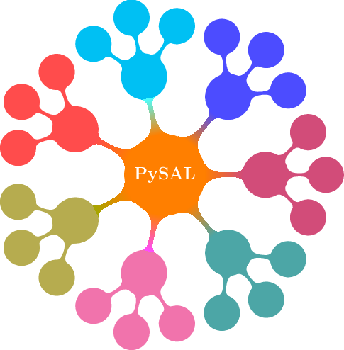

PySAL, the Python Spatial Analysis Library for open source, cross-platform geospatial data science.

PySAL Components

lib
Core spatial data structures, file IO. Construction and interactive editing of spatial weights matrices & graphs. Alpha shapes, spatial indices, and spatial-topological relationships.

explore
Modules to conduct exploratory analysis of spatial and spatio-temporal data, including statistical testing on points, networks, and polygonal lattices. Also includes methods for spatial inequality and distributional dynamics.

model
Estimation of spatial relationships in data with a variety of linear, generalized-linear, generalized-additive, and nonlinear models

viz
Visualize patterns in spatial data to detect clusters, outliers, and hot-spots.

PySAL Notebook Project
Explore PySAL from your browser by visiting the PySAL notebook project which demonstrates select functionality of the library.
